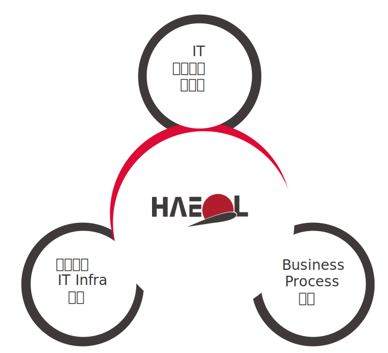

사업분야
고객 경쟁력 향상 및 기업가치를 극대화합니다.

BUSINESS
-
- ISP 컨설팅 서비스
-
- · 정보시스템 수준진단
- · 정보시스템 발전 방향 수립
- · 정보전략계획 수립
- 현행 시스템에 대한 수준 진단 후 비지니스, 데이터, intra 구조를 개선한 목표시스템 설계 및 이행 계획 수립
-
- SI 구축 서비스
-
- · 공공기관 시스템 구축 사업
- · 국민연금 시스템 구축 사업
- · 민원, 표준, 인증, 시험성적서 등에 특화된 구축사업
- 고객에게 필요한 응용시스템을 개발 및 다양한 플랫폼에 운영 가능한 시스템 제공
-
- SM 운영 서비스
-
- · 정보시스템 위탁 운영
- · 전문 ITO 인력 파견사업
- 정보시스템을 효율적으로 운영될 수 있도록 응용/상용 SW에 대한 안정적인 운영 및 유지관리